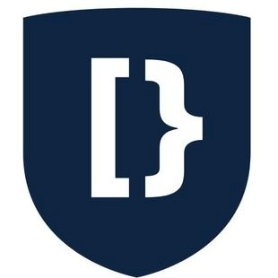
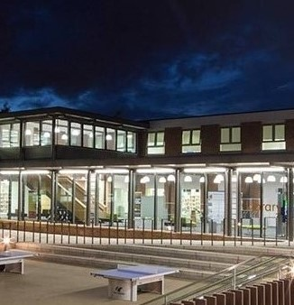

Develop my computing and communication skills
I have joined DevSoc where I met many students from senior courses and I had the opportunity to ask them many questions regarding my future education which made many things much clearer for me and also I made quite a few friends there which made the whole studying process more fascinating and interactive. Also, I have visited DevSoc python workshop. In this session, we covered the basics of the language and object-oriented programming (OOP) rules. The workshop was really helpful for me because my python project idea required the use of OOP. Thanks to event hosts I have got an opportunity to ask questions and get support. After this meeting,- I started to feel more confident in OOP and completed my project with no struggle.
Master the Mainframe 2020
I participated in the Master the Mainframe IBM 2020 challenge. This challenge gave me an opportunity to earn badges for completing challenges of different difficulty making use of shell script programming language. To be able to complete these challenges I also did some reading on shell script on my own and made some research on the Mainframe. Overall I was able to earn 8 badges for completing different challenges and in the future, I will be able to provide these badges to my employer as an indicator of my skills in shell script and basic knowledge of Mainframe.
Learn to work in a team
Me and my current course mates have noticed that we share many common interests and all of us being international students we have decided to create our own society namely MCMC to foster communication between international students like us, since we don’t share a common language the only convenient form of communication for is communicating in English which of course will be improving English skills of all of the members, also since I will be executing some of the managings and controlling tasks in this society it will provide me with crucial skills that I will be able to apply to at my future workplace.
Develop assignment and assesment completion skills
Every week I was visiting CERT mentor sessions on teams. Mentors were showing us many useful tips for our upcoming projects and tests. Those sessions made a good understanding of what level of knowledge as a first-year student I expected to perform and helped to get ready for my web and programming assignments. Further, I have joined Library webinars to get guidance before report writing. During the session Library staff explicitly explained referencing techniques and also gave us some advice on how and where to search for relevant and useful articles for our future reports and introduced the RefWorks software. I made use of all of this knowledge while I was writing my report and learning all of this helped me a lot.
